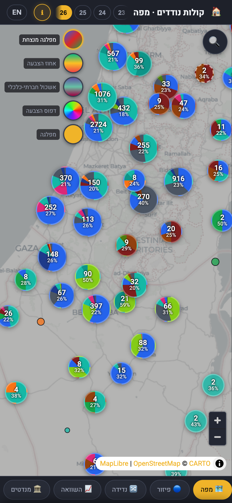
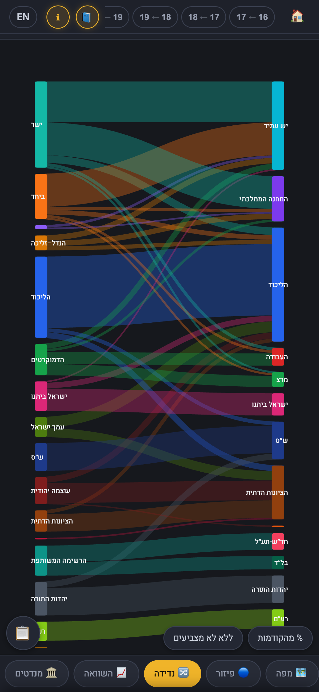
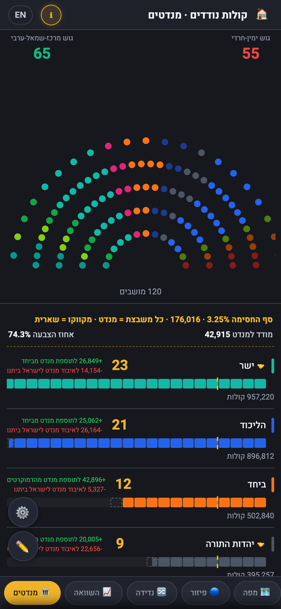
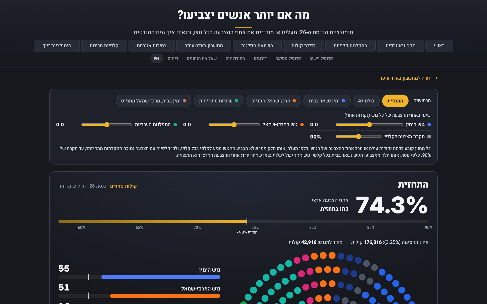
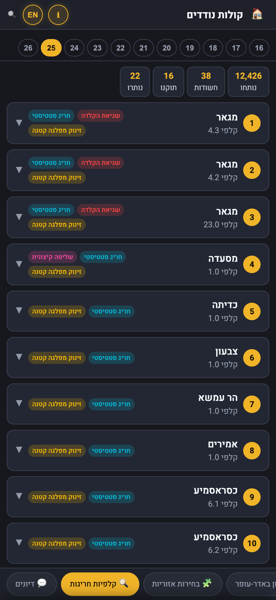
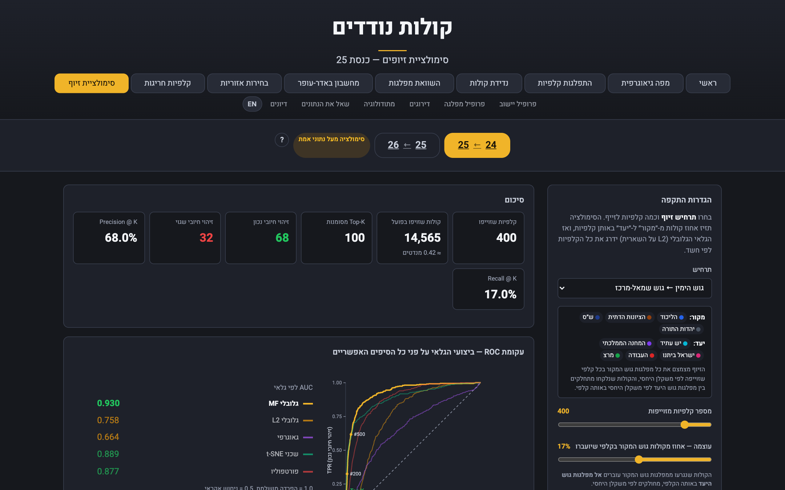

יום שלישי · 27 באוקטובר 2026
הבחירות לכנסת ה־26
21:59:56
הקלפיות נסגרות.
ואנחנו מתחילים לעבוד.
12,018 קלפיות. כל אחת תגיע לכאן.
כל 10 דקות.
אוטומטית.
מוועדת הבחירות, ישר למסך שלכם
1
ועדת הבחירות מפרסמת
2
אנחנו בודקים
כל 10 דקות
3
מאמתים
טביעת אצבע וספירת קלפיות
4
בונים הכול מחדש
5
באוויר, תוך דקות
קלפיות שנספרו0 / 12,018
25%
50%
80%
100%
מה קורה
בקלפי שלך?
12,018 קלפיות, על המפה

לאן נדדו
הקולות?
מכנסת 25 לכנסת 26, לפי מודל נדידת קולות ארצי

23 שנה
של נדידת קולות
כל מערכות הבחירות, 2003–2026

מחשבון
מנדטים
כמה קולות צריך כדי להעביר מנדט בין הרשימות

איזה גוש
יוצא להצביע?
ומה זה עושה למנדטים
kolot-nodedim.netlify.app/turnout

דוגמה · סימולציה לפני הבחירות
קלפי חריגה?
נראה אותה.
ציון חריגות לכל קלפי

kolot-nodedim.netlify.app/fraud-sim

נתוני אמת · כנסת 25
🔍 סימולטור לאיתור וזיהוי זיופי בחירות
וזה רק חלק.
11 מערכות בחירות, 2003–2026
פרופיל לכל יישוב ומפלגה
עברית / English
שאלו את הנתונים ב־Claude
קולות נודדים
אתר נתוני הבחירות הגדול בישראל
ליל הבחירות, 27.10, מ־22:00
kolot-nodedim.netlify.app
נתונים רשמיים מוועדת הבחירות
כל קלפי, כל יישוב
הגרפים בסרטון: דוגמה, סימולציה לפי הסקרים